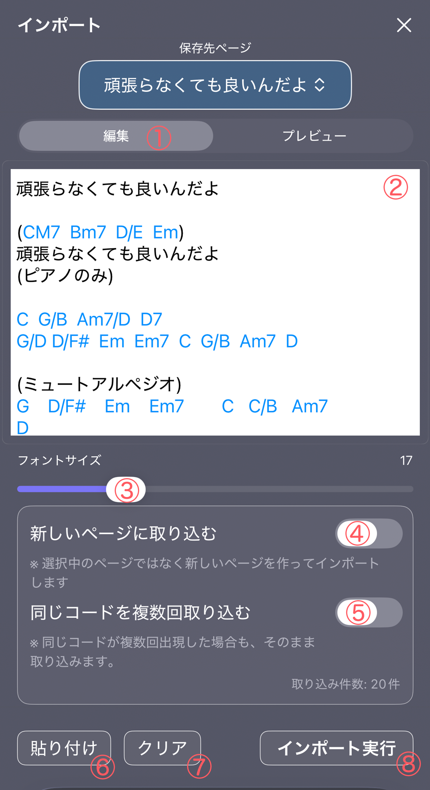
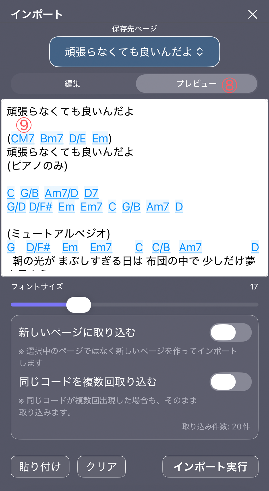
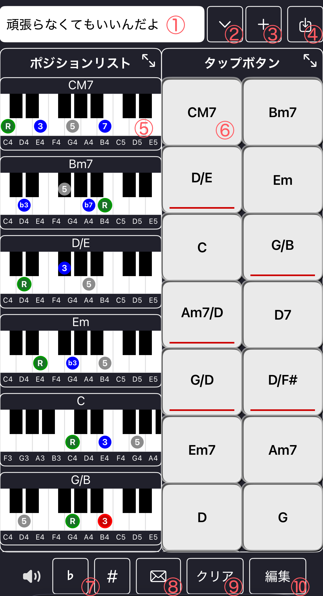

コード譜を貼り付けて、コード進行を自動解析してMemoに取り込む
コード譜インポートは、テキストのコード譜を貼り付けるだけで コード進行を自動解析し、Memoに取り込む機能です。
歌詞や説明文が混じっていても、コードとして認識できる部分を抽出します。
「保存先ページ」で、どのMemoページに取り込むかを選択します。
※ Pro版ではMemoがページ管理され、ページ数も扱いやすくなります。
編集モードでは、コードらしい文字列が見やすいようにハイライトされます。

① 編集モード
コード譜を入力・修正するモードです。コードとして認識できる文字列はハイライト表示されます。
② 編集エリア
コード譜や歌詞付きコードを入力するテキストエリアです。貼り付けた内容からコードが自動解析されます。
③ フォントサイズ変更スライダー
表示文字サイズを調整します。編集モードとプレビューモードの両方に反映されます。
④ 新しいページに取り込むスイッチ
オンにすると、選択中のページではなく新しいページを作ってインポートします。
⑤ 同じコードを複数回取り込むスイッチ
オンにすると、同じコードが繰り返し出現してもそのまま取り込みます。
⑥ 貼り付けボタン
クリップボードのテキストを編集エリアに貼り付けます。
⑦ クリアボタン
編集エリアの内容をすべて削除します。
⑧ インポート実行ボタン
解析されたコード進行をMemoに取り込みます（Pro版のみ）。
プレビューモードでは、解析されたコードが見やすく表示されます。

⑧ プレビューモード
解析結果を確認するモードです。認識されたコードが見やすく表示されます。
⑨ サウンド確認ボタン
Pro版では、プレビュー中にコード名をタップすると音を確認できます。
入力中はキーボードに「完了」ボタンが表示され、すぐ閉じられます。
Pro版では、青色で表示されたコード名をタップすると その場で音を確認できます。
※ 非課金版では、プレビュー中のコード名タップによる再生はできません。
たとえば、次のようなコード譜を貼り付けます。
CM7 Bm7 D/E Em
頑張らなくてもいいいんだよ
(ピアノのみ)
C G/B Am7/D D7
G/D D/F# Em Em7 C G/B Am7 D
(ミュートアルペジオ)
G D/F# Em Em7 C C/B Am7 D
朝の光が まぶしすぎる日は 布団の中で 少しだけ夢を見よう
G D/F# Em Em7 C G/B Am7 G
昨日の涙も うまく笑えない顔も 誰かと比べなくていいんだよ
プレビューで解析結果を確認し、問題なければ「インポート実行」でMemoに取り込みます。
